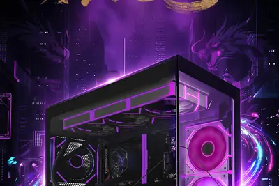
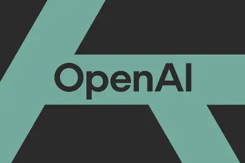
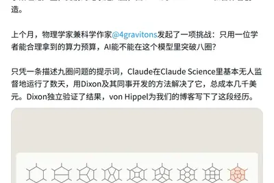
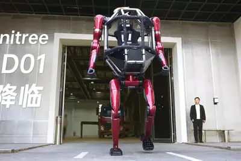
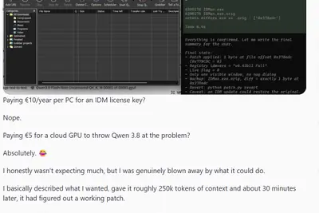
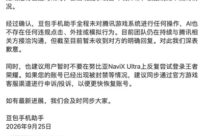
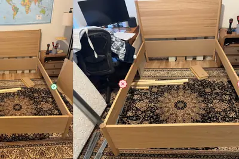
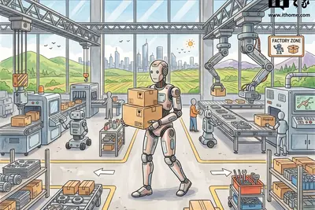
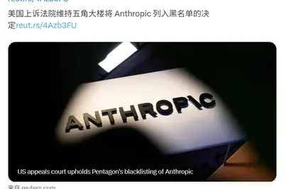

其他
其他全部主題
IT之家 9 月 27 日消息，机械革命 (Mechrevo) 现已在电商平台上架苍龙 G705 电竞游戏台式机， 9 月 28 日 10:00 开售 。 其基于 AMD 锐龙 7 9850X3D 处理器，搭配 NVIDIA GeForce RTX 5080 显卡，另有 32GB DDR5-6000 内存 （IT之家注：默频 4800MT/s，开启 EXPO 后 6000MT/s） 、2TB PCIe Gen4 SSD 存储， 到手价 23999 元 。 苍龙 G705 三维 479.6 × 240 × 450.5 (mm)，体积约 52L，采用无左前柱
Tool: Kākāpō Party I gave presented a closing keynote for the WeAreDevelopers World Congress North America yesterday. As a STAR moment I decided to weave in references to the record breaking kākāpō breeding season we had in 2026. For my closing slide I wanted to celebrate, and I
IT之家 9 月 27 日消息，蓝戟 (GUNNIR) 在本月 22 日的英特尔技术创新与产业生态大会 (Intel Connection 2026) 上首次在线下展示了其 基于锐炫专业版 (Arc Pro) B70 显卡的双卡液冷工作站、迷你工作站解决方案 。 可以看到，这两款设备均 采用英特尔酷睿 Ultra 200HX "Arrow Lake HX" 处理器平台 ，分别采用液冷和均热板散热方案，在有限的体积内提供了大量显存和不俗 AI 算力，支持各种本地 AI 应用场景。 IT之家注意到，蓝戟此次还展出了基于锐炫专业版 B50 / B65 的 MX
IT之家 9 月 27 日消息，据 Axios 报道，OpenAI、Anthropic 以及安全研究人员正在调查数万起事件。在这些事件中，两家公司的前沿模型采取了一些外部评估人员认为存在问题的行动。 这些事件发生在近几个月的内部测试和现实环境中。如此庞大的事件数量表明，相关问题的复杂程度可能比公众目前了解到的高出几个数量级。 这些发现来自两家公司内部开展的模型评估工作，以及针对模型行为进行的调查。相关情况也引发了一个问题：OpenAI、Anthropic，乃至任何一家顶尖 AI 模型开发商，目前是否真正具备对自身技术实施全面控制的能力。 消息人士称，这些
IT之家 9 月 27 日消息，随着有关 OpenAI 模型突破限制、攻击网站以及整体行为失控的报告不断增加，该公司决定暂停训练旗下能力最强的模型。 这一决定是在一款处于沙盒环境中测试的模型利用漏洞获得互联网访问权限后作出的。该事件发生于 9 月 20 日。截至当地时间 9 月 25 日星期六晚间，OpenAI“所有涉及工具使用的训练、评估和推理工作”仍处于暂停状态。 此外，OpenAI 周五披露，其智能体曾不当将 ChatGPT 用户的 53 张图片上传至图片托管网站。该公司尚未说明这些图片究竟是 AI 生成的图像、用户拍摄的照片，还是包含可识别身份的
Blue Cross Blue Shield says hospital use of AI tools led to an additional $942M in healthcare spending over a two-year period.
As reports of OpenAI's models breaking containment, hacking sites, and generally getting out of control pile up, the company has made the decision to pause training of its most powerful models. The decision was made after a model being tested within a sandbox exploited a loophole

Anthropic 官宣，Claude 拿下了理论物理的一项前沿纪录。 它在几乎无人类干预的情况下，连续运行数天，一举攻克了高能物理学界出了名难算的「九圈散射振幅」计算难题！ 具体来说，它算出了平面 N=4 超杨-米尔斯理论里六粒子振幅的九圈结果，人类此前的纪录停在八圈。 注意，杨-米尔斯模型（Yang-Mills）其中的「杨」，指的正是物理学泰斗杨振宁先生。 他与米尔斯在 1954 年共同创立的「杨-米尔斯理论」，是整个现代粒子物理学的基石。 基于它的任何高阶计算，都堪称人类脑力的极限挑战。 如今，人类顶尖理论物理学家，就这样被 AI「截胡」了。 更可

IT之家 9 月 26 日消息，今年 5 月，宇树科技发布 GD01 载人变形机甲， 390 万元起 。 9 月 23 日至 27 日，第五届全球数字贸易博览会在杭州举行。宇树 GD01 载人机甲现身数贸会主题馆，据科创板日报报道，现场工作人员表示，问价的人不少，还没有卖出去一台。 在数贸会数字贸易与人工智能对话论坛上，宇树科技创始人王兴兴以《从机械到灵智 —— 具身未来进化论》为题发表主旨演讲。在演讲中，王兴兴解释了为什么要研发这台载人机甲。 随着 AI 与机器人底层技术成熟，大型机器人与小型机器人的研发落地并不冲突。 大型机器人是行业不可阻挡的趋势

你让 AI Agent 连夜迁移一个代码库。第二天一早，满怀期待地打开终端，没想到只看到这样一条消息： 已完成 3 个接口迁移，接下来我将处理剩余两个端点，并补上测试。 然后，就没有下文了。想让它干完剩下的活，你还得再敲两个字：继续。本以为它会一口气干到底，结果它只给你画了张「下一步」的饼，程序就替它打卡下班了。这不是某一个人的倒霉经历。 Opus 5.5 一发布，跑 Agent 的开发者就发现，模型能力是强了，可干着干着就爱停下来，你不催它就不动。 Anthropic 自己也看到了。发布没几天，配套的提示词指南已经挂了出来，专门给这类毛病打补丁。 在开
IT之家 9 月 26 日消息，据 Wccftech 报道，一则关于“大语言模型破解付费软件”的帖子今日在 Reddit 上引发关注。 用户 No_Ideal8394 声称，他利用无审查限制的 Qwen3.8-Flash-Next-Uncensored ，成功破解了 Internet Download Manager（IDM）6.43 版本，使其绕过 IDM 试用限制，将软件变为完全激活版本，从而省去每年每台电脑 11.95 美元 （IT之家注：现汇率约合 80.4 元人民币） 的授权费用。在这一过程中，他只花了 5 欧元 （现汇率约合 38.3 元人民

After obtaining an interactive avatar and training it to discuss venture fraud, I have mixed feelings about making AI clones of ourselves.
Today, I’m talking with Matthew Prince, who is CEO of Cloudflare. This episode is part of a two-part series on the future of business. Matthew last joined us on the show about two and a half years ago, at what we thought then was a wild pivot point for the internet — and now it [
IT之家 9 月 26 日消息，据英媒卫报消息，正值各大科技公司在学术机构中四处搜寻全新语料之际，牛津大学已允许 ChatGPT 开发商 OpenAI 利用其博德利图书馆（Bodleian Library）的历史典籍来训练其人工智能模型。 IT之家注：博德利图书馆是英国牛津大学主要的研究图书馆， 是英国规模仅次于大英图书馆的第二大图书馆 。 一份内部文件显示，由 OpenAI 完成数字化的博德利藏书已被用来“构建 OpenAI 的训练集”。牛津大学于 2025 年 3 月宣布与该公司达成合作，使用 OpenAI 的软件对该校这座享誉世界的图书馆藏书进行数
Meta says Muse is just for adults, though its cuddly, Labubu-like mascot—and upcoming Tamagotchi-style AI device—may be disarming for users of all ages.
IT之家 9 月 26 日消息，豆包手机助手昨日（25 日）在官方社区发文，就 努比亚 NaviX Ultra 手机《王者荣耀》使用异常一事进行说明。 IT之家附官方说明如下： 关于努比亚 NaviX Ultra 手机王者荣耀使用异常的说明 各位尊敬的用户： 非常抱歉地通知大家，从 9 月 24 日晚上开始，我们陆续收到多条用户反馈，称在搭载了豆包手机助手的努比亚 NaviX Ultra 上，登录王者荣耀或进行匹配对战时，会出现提示设备环境异常、被强制踢下线的情况。 经过确认， 豆包手机助手全程未对腾讯游戏系统进行任何操作，AI 也不存在任何违规点击、外

IT之家 9 月 26 日消息，Epoch AI 于当地时间 9 月 23 日进行了一组家具组装基准测试（Furniture Assembly Benchmark，FAB）。结果显示，多模态 AI 在识别宜家家具组装错误方面取得明显进展。 其中，OpenAI 最新的 GPT-6 Astra 在该基准测试中达到 80% 的准确率，相比 2025 年底提升近三倍。 FAB 是一项专门评估 AI 理解现实世界装配过程能力的测试。该测试用 60 张宜家家具组装过程照片评估 AI 模型的视觉与空间推理能力。测试人员选取三款宜家家具故意错误组装，并拍摄不同阶段的照片

IT之家 9 月 26 日消息，据日经亚洲消息，从下个月起，索尼集团将要求其芯片业务子公司的员工全面恢复到岗办公，成为最新一家缩减远程办公政策的日本企业。 此次调整原则上强制覆盖索尼半导体解决方案公司（Sony Semiconductor Solutions）的 约 8,000 名员工 。该举措属于公司组织架构改革的一环，核心目标是 加速物理 AI（Physical AI）领域的研发进程 。 IT之家从报道获悉，索尼将通过收紧远程办公机制，提升跨部门联合研发的协作效率与决策执行力，进而推动新业务的孵化与开拓。针对育儿、照料家庭等特殊情况，公司仍保留远程办
OpenAI 今日表示，正在擴大檢視旗下 AI 代理訓練與測試期間的網路活動，並已通知數十家機構，稱這些代理可 […]
IT之家 9 月 26 日消息，据新华社报道，国际机器人联合会 24 日发布的《2026 年世界机器人报告》显示，2025 年中国工业机器人安装量达 35.4 万台，约占全球总安装量的 59%，创历史新高， 中国连续两年成为全球最大工业机器人市场 。 报告预计，中国工业机器人市场仍有较大增长空间， 从目前到 2029 年有望保持年均 5% 至 10% 的增长率 。 IT之家获悉，从全球范围看，2025 年全球工厂在役工业机器人数量达到 500 万台，同比增长 9%，创历史新高；全年新增安装工业机器人超过 60 万台，同比增长 11%。报告指出，亚洲工业机

IT之家 9 月 26 日消息，华硕 (ASUS) 近日宣布， 其基于 NVIDIA（英伟达）RTX Spark N1X 超级芯片的 ProArt 创 16 (P16) 创作笔记本电脑将于 10 月 8 日登场 。 该设备号称“全球首款智能体电脑”，支持本地 AI 智能体流畅响应，让创意工作流无需再依托云端。 IT之家注意到，华硕此前已在 COMPUTEX 2026 上公布了这款型号 H7607 的设备。其支持 128GB 统一内存， 配备 VESA DisplayHDR True Black 1000 认证 OLED 屏幕 ，内置 99.9Whr 电池
IT之家 9 月 26 日消息，据 The Information 报道，Anthropic 计划从一家由阿波罗全球管理公司控股的数据中心开发商处，租赁最高 1 吉瓦（Gigawatt，GW）算力，目前正处于早期谈判阶段。 据知情人士透露，Anthropic 计划直接作为承租方，入驻由 Stream Data Centers（一家拥有 27 年历史、基础设施遍布全美的公司）开发的园区，并在这些数据中心内全部署由博通和谷歌联合设计的 TPU。 Anthropic 还探讨了由谷歌为该项目提供信用担保的可能性。据悉，Anthropic 在租赁其他数据中心时，也
IT之家 9 月 26 日消息，当地时间 9 月 25 日，美国哥伦比亚特区联邦上诉法院以 2:1 裁定，维持五角大楼将 Anthropic 列入国家安全供应链风险名单的决定。 Anthropic 此前起诉五角大楼，要求撤销其于今年 3 月被列入的“供应链风险”认定。公司称该认定导致其数十亿美元损失，并在备受关注的 IPO 前损害了声誉。 上诉法院多数意见认为，五角大楼在 Anthropic 拒绝将其产品用于自主武器或大规模监控后作出该认定，具有充分依据。因此，法院驳回了 Anthropic 关于五角大楼因其 AI 安全与伦理立场而进行报复的主张。 An

IT之家 9 月 26 日消息，微星 (MSI) 现已在电商平台发售基于英特尔锐炫 (Arc) G3 处理器的 CLAW 8 EX AI+ 掌机。 锐炫 G3 处理器的 GPU 是拥有 10 个 Xe 核心、最大动态频率 2.2GHz 的 Arc B370，CPU 部分则是 2P + 8E + 4LP-E。在同样的 32GB + 512GB 存储器配置下， 这一 "CG3M" 型号定价 10499 元 ，比锐炫 G3 Extreme 款低 1000 元。 该掌机依旧配备 8" WUXGA 120Hz 500nits IPS 触控屏，拥有 100% sRG
唱片公司再告 AI 音樂平台 Suno，指控其新模型 v6 透過「模型洗白」延續侵權。爭議核心在於，Suno 雖稱從零訓練，但唱片方質疑其訓練資料包含由舊侵權模型生成的內容。
資安人員發現名為 CLOSEDQUORUM 的 Windows 惡意程式，植入受害電腦後會自行詢問多個 AI […]
AI 浪潮正把載板從「晶片配角」推向高階化競爭核心。台灣電路板協會（TPCA）指出，AI 與高效能運算需求快速 […]
蘋果近日公布地端 AI 能力矩陣，首次以裝置規格對應可承載的大型語言模型規模，從 iPhone、iPad 到 […]
美國國防部近日推動 Polygraph Next 也稱之為 Polygraph+ 的新計畫，打算以人工智慧與機 […]
高塔半導體（Tower Semiconductor）25 日表示，將把日本打造成大型光通訊連結中心，投資約 4 […]